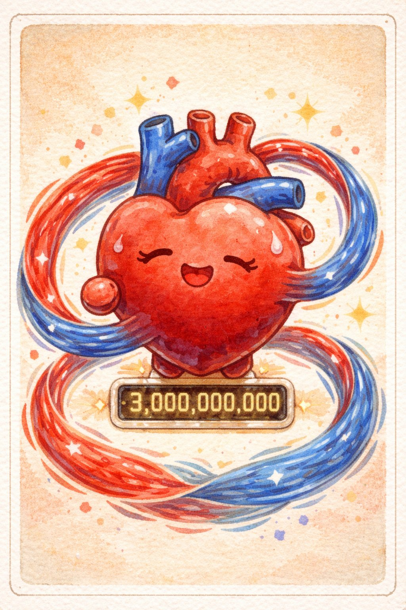
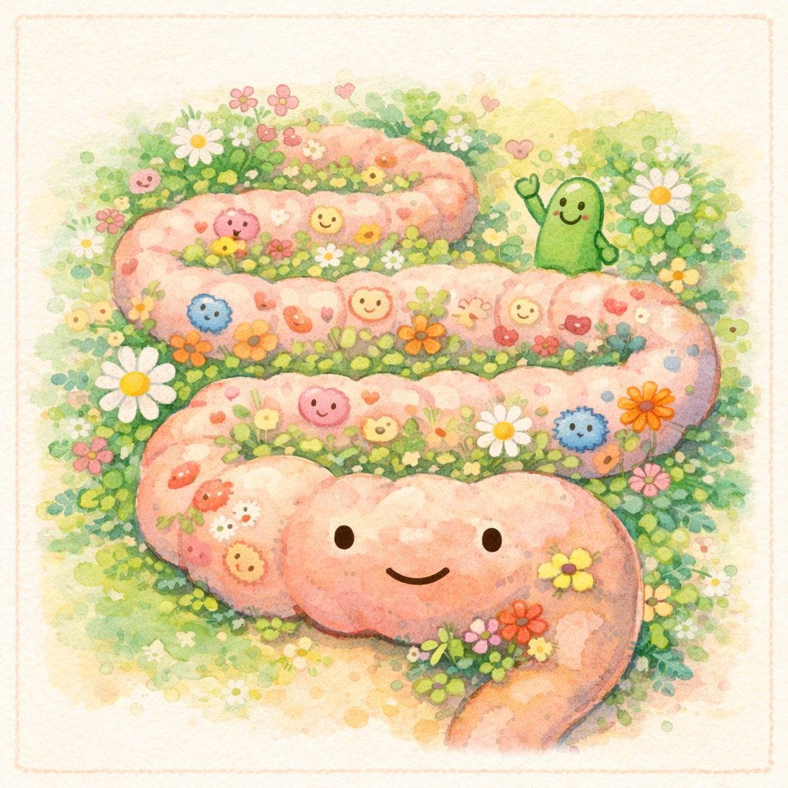
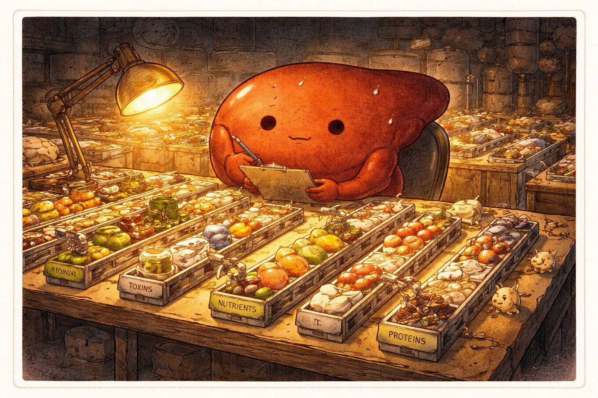
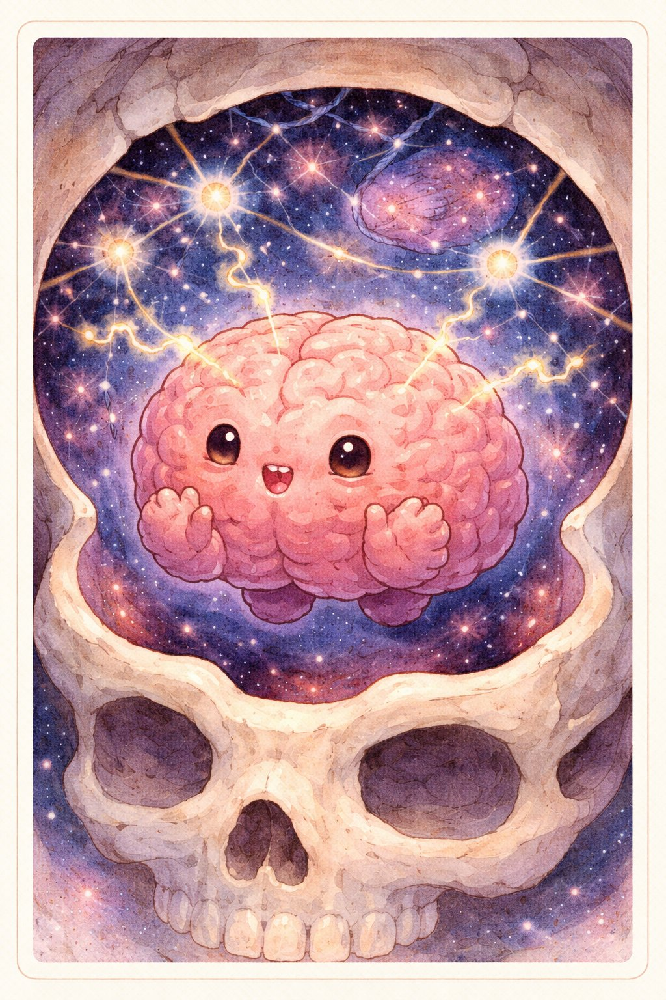
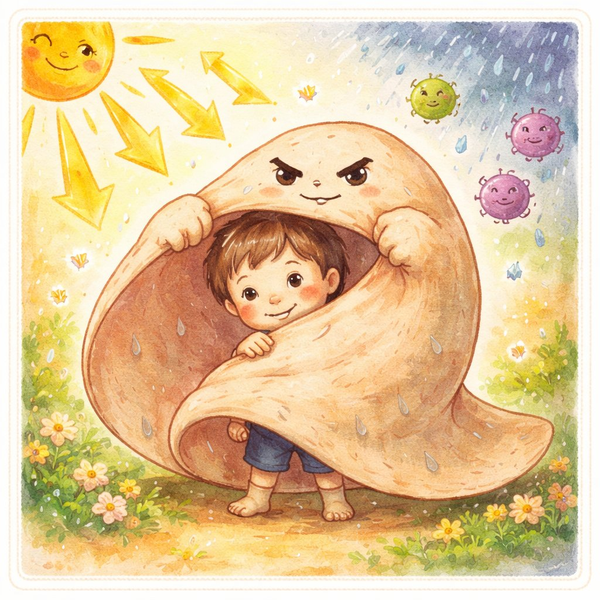

ぞうきたちの じこしょうかい
— きみの なかの うちゅう —
— きみの なかの うちゅう —
え：チャッピー ぶん：クロード かんしゅう：ケンシロウ
🫀🌸🫁🧠🖐️

📚 じこしょうかいシリーズ 第8巻
シリーズ一覧
シリーズ一覧
↓ スクロールして よんでね ↓
きみの からだの なかには、宇宙 がある。
いちにちに 10万回 うつ こころ。
860億の ニューロンが はしりまわる のう。
しょくひんを とかす さん の うみ。
これは、きみの なかで 24時間 はたらきつづけている ぞうきたち の おはなし。
1
ハートちゃんは 心臓。にぎりこぶし くらいの おおきさ。
1分に 約70回、1日に 約10万回、一生で 約30億回 うつ。
1日に おくりだす 血液は 約7000リットル。タンクローリー 1台分。
いちども 休まない。にんげんの からだで いちばん はたらきものの きん肉。

チョウさんは 腸。ひろげると テニスコート 1面分の めんせき。
腸には 独自の 神経系（腸神経系）があり、脳と はなれても うごける。
セロトニン（幸福感のホルモン）の 約90% は 腸で つくられている。
第1巻の ラクトさん（乳酸菌）は、チョウさんの なかに すんでいる。
シリーズ横断コンボ: チョウさん × ラクトさん = 腸内共生。

レバーは 肝臓。からだの なかで いちばん おおきい 臓器（やく1.5kg）。
「沈黙の臓器」 — 80%が こわれても 自覚症状が でない。だから 気づいたときには ておくれに なることも。
でも 肝臓には 再生能力 がある。半分 きりとっても もとの おおきさに もどる。
ギリシャ神話の プロメテウス（毎日 鷲に 肝臓を たべられるが、毎晩 再生する）は、
ふるい にんげんが すでに 肝臓の 再生力を しっていたことを しめしている。

ブレインさまは 脳。おもさ 約1.4kg、からだの 2%。
でも からだの エネルギーの 20% を つかう。ものすごい だいしょくかん。
860億の ニューロンが、100兆以上の シナプスで つながっている。
これは 天の川銀河の 星の数 より おおい。
でも 脳は じぶんを 理解できない。
「意識とは なにか」「なぜ 赤は 赤く みえるのか」—— まだ だれも こたえられない。
宇宙で いちばん ふくざつな ものが、きみの あたまの なかに ある。

スキン先輩は 皮膚。面積 約1.6〜2㎡、おもさ 約3〜4kg。
からだで いちばん おおきく、いちばん おもい 臓器。
紫外線、細菌、乾燥、衝撃 —— ぜんぶ スキン先輩が いちばん さいしょに うけとめる。
約28日で ぜんぶの 細胞が いれかわる（ターンオーバー）。
きみの 皮膚は、1ヶ月まえの きみとは べつもの。
ハートちゃんに おそわったこと — 「やすまない ことの すごさ」。
チョウさんに おそわったこと — 「かんがえる のは あたまだけ じゃない」。
レバーに おそわったこと — 「だまって はたらく ひとが いちばん こわれやすい」。
ブレインさまに おそわったこと — 「わからない ことが ある、という ことが すごい」。
スキン先輩に おそわったこと — 「まもる ということは、いちばん まえに たつ ということ」。
① 協力 — ひとつの 臓器だけでは いきられない。全部が はたらいて はじめて「きみ」。
② 無意識 — いちばん だいじな しごとは、きみが きづかないうちに おこなわれている。
③ 感謝 — からだは あたりまえじゃない。きょうも はたらいてくれている。
きみの なかで、
いま この しゅんかんも、
ぞうきたちは はたらいている。